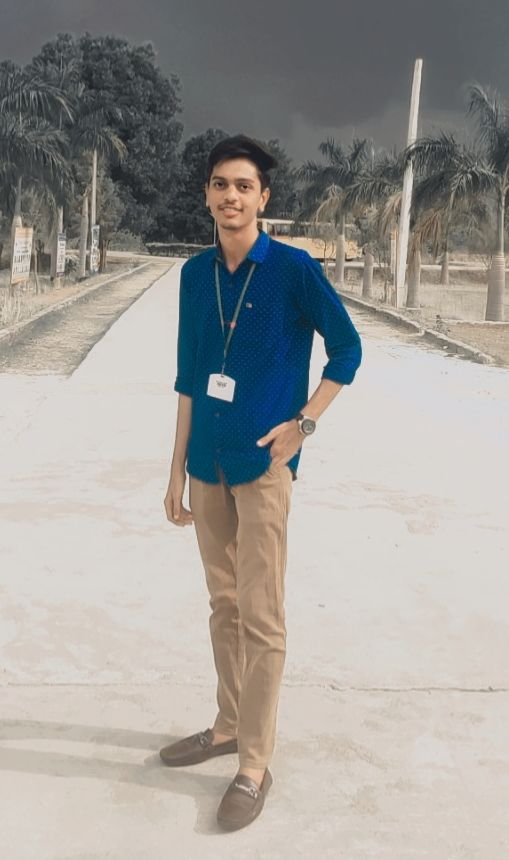

About Me

Currently Seeking a Python Developer Role
Hi, I'm Mayana Mohammed Fazil Khan, a Computer Science graduate (B.Tech, 2024) from Aditya College of Engineering, Madanapalle. I am passionate about problem-solving, full-stack development, and AI/ML applications. I am currently interning at Katalix Solutions, where I work with IBM Watsonx, focusing on data cleaning, AI/ML model development, and predictive analytics.
-
Personal Details
- Name: Mayana Mohammed Fazil Khan
- Age: 21
- Education: B.Tech in Computer Science & Engineering
- Location: Bangalore
-
Technical Skills
- Python, Django, MySQL
- HTML, CSS, JavaScript
- Data Structures & Algorithms
- IBM Watsonx AI, AutoAI, Cloud Computing
-
Internships & Experience
- Intern at Katalix Solutions - Working on IBM Watsonx, AI/ML, Data Fabrics
- Full-Stack Python Developer Internship
- AI-ML Virtual Internship
-
Online Certifications
- Advanced Computer Architecture (NPTEL)
- Data Structures & Algorithms (Code360)
- Responsive Web Design (freeCodeCamp)